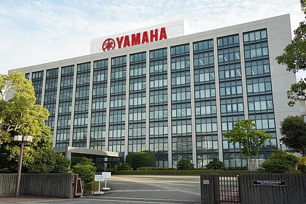

Yamaha Motor Co., Ltd. (ヤマハ発動機株式会社, Yamaha Hatsudōki Kabushiki gaisha) is a Japanese multinational conglomerate mobility manufacturer that was founded in 1955. The company operates across various industries and manufactures a wide range of motorized products, including motorcycles, motorboats, outboard motors, and semiconductor manufacturing equipment.
The company was established following its separation from Nippon Gakki Co., Ltd. (currently Yamaha Corporation) and is headquartered in Iwata, Shizuoka, Japan. As of 2024, the company operates development, production, and marketing functions through 137 consolidated subsidiaries. Yamaha has been the world's second-largest motorcycle manufacturer, and it is the global leader in water vehicle sales. In addition, Yamaha holds the world's second-largest market share in chip mounters for semiconductor manufacturing equipment.
Led by Genichi Kawakami, the company's founder and first president, Yamaha Motor spun off from musical instrument manufacturer Yamaha Corporation in 1955 and began production of its first product, the YA-1 125cc motorcycle. It was quickly successful and won the 3rd Mount Fuji Ascent Race in its class.
The company's products include motorcycles, scooters, motorized bicycles, boats, sail boats, personal watercraft, swimming pools, utility boats, fishing boats, outboard motors, 4-wheel ATVs, recreational off-road vehicles, go-kart engines, golf carts, multi-purpose engines, electrical generators, water pumps, automobile engines, surface mounters, intelligent machinery, electrical power units for wheelchairs, and helmets. The company is also involved in the import and sale of various types of products, the development of tourist businesses, and the management of leisure, recreational facilities and related services.

History
Parent company
Nippon Gakki Co., Ltd (currently Yamaha Corporation) was founded by Torakusu Yamaha in 1887 to manufacture reed organs and pianos and became the largest Japanese manufacturer of musical instruments in the early 20th Century. Yamaha was contracted to manufacture wooden and (later) metal airplane propellers by the Japanese government during World War II. The company struggled in the aftermath of the war, and in the early 1950s, chairman Genichi Kawakami decided to repurpose its underutilized war-time facilities to manufacture small motorcycles for leisure use.
Beginnings: 1955
The motorcycle division of Yamaha was spun off in 1955, being incorporated on 1 July 1955 in Japan, and was headed by Genichi Kawakami. Yamaha's initial product was a 125 cc (7.6 cu in) two-stroke, single cylinder motorcycle, the YA-1, which was a copy of the German DKW RT 125. The YA-1 was a competitive success at racing from the beginning, winning not only the 125cc class in the Mt. Fuji Ascent, but also sweeping the podium with first, second and third place in the All Japan Autobike Endurance Road Race that same year. Early success in racing set the tone for Yamaha, as competition in many varieties of motorcycle racing has been a key endeavor of the company throughout its history, often fueled by a strong rivalry with Honda, Suzuki, Kawasaki, and other Japanese manufacturers.
Yamaha began competing internationally in 1956 when they entered the Catalina Grand Prix, again with the YA-1, at which they placed sixth. The YA-1 was followed by the YA-2 of 1957, another 125cc two stroke, but with significantly improved frame and suspension. The YD-1 of 1957 was a 250cc two-stroke twin cylinder motorcycle, resembling the YA-2, but with a larger and more powerful motor. A performance version of this bike, the YDS-1 housed the 250cc two-stroke twin in a double downtube cradle frame and offered the first five-speed transmission in a Japanese motorcycle. This period also saw Yamaha offer its first outboard marine engine.
Success and growth in the 1970s
By 1963, Yamaha's dedication to both the two-stroke engine and racing paid off with their first victory in international competition, at the Belgian GP, where they won the 250cc class. Success in sales was even more impressive, and Yamaha set up the first of its international subsidiaries in this period beginning with Thailand in 1964, and the Netherlands in 1968. 1965 saw the release of a 305cc two-stroke twin, the flagship of the company's lineup. It featured a separate oil supply which directly injected oil into the gasoline prior to combustion (traditionally riders had to pre-mix oil into gasoline together before filling the gas tank on two stroke engines). In 1967 a new larger displacement model was added to the range, the 350cc two stroke twin R-1.
In 1968, Yamaha launched their first four-stroke motorcycle, the XS-1/650 which was a 650cc four-stroke twin, a larger and more powerful machine that equaled the displacement and performance of the popular British bikes of the era, such as the Triumph Bonneville and BSA Gold Star. Yamaha continued on with both the two-stroke line and four-stroke twins at a time that other Japanese manufacturers were increasingly moving to four cylinder four-stroke machines, a trend led by Honda in 1969 with the legendary CB750 four-stroke four-cylinder cycle.
Two stroke era begins: the 1970s
In early 1969, Yamaha added reed-valve induction to its previously piston-ported designs to produce the twin-cylinder RD and single-cylinder RS families, with variants in a number of capacities. There was a persistent, but apocryphal, rumour to the effect that "RD" indicated race developed. In fact, "R" appears to have indicated reed valved, "D" the twin (or double) cylinder models and "S" the single-cylinder models. The RD family would be developed through the 1970s and 1980s, gaining solid wheels, water-cooling, YPVS, and other newer technology 'til they had little in common with the original variants (before being supplanted by the TZR). The RS family was produced for many years in a large number of variants by Yamaha and then Escorts Limited in India without losing its resemblance to its progenitors. In addition to the RD and RS standards, Yamaha also manufactured small standards with stamped steel frames and rotary disc-valved motors such as the Yamaha FS1, and step-through V-50 and V-80 designs. Its Enduro trail bike was replaced by the DT models. Not until 1976 would Yamaha answer the other Japanese brands with a multi-cylinder four stroke of their own. The XS-750 (and later 850) a 750cc triple cylinder machine with shaft final drive was introduced almost seven years after Honda's breakthrough bike. Yamaha's first four-cylinder model, the XS-1100 followed in 1978, again with shaft drive. Despite being heavier and more touring oriented than its rivals it produced an impressive string of victories in endurance racing.
The 1970s also saw some of the first dedicated off-road bikes for off-road racing and recreation. Yamaha was an early innovator in dirt-bike technology, and introduced the first single-shock rear suspension, the trademarked "Monoshock" of 1973. It appeared in production on the 1974 Yamaha YZ-250, a model which is still in production, making it Yamaha's longest continuous model and name. Yamaha continued racing throughout the 1960s and 1970s with increasing success in several formats. The decade of the 1970s was capped by the XT500 winning the first Paris-Dakar Rally in 1979.